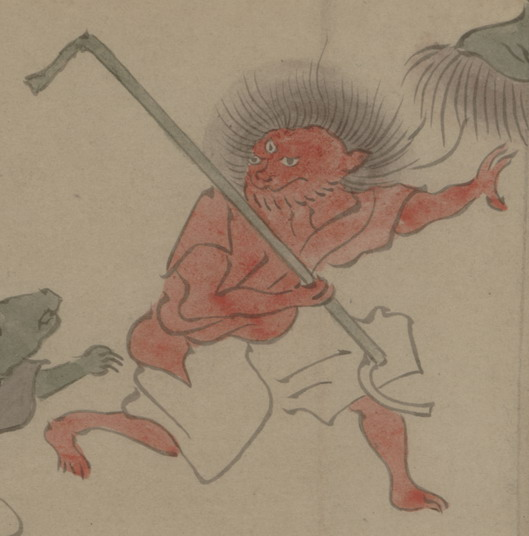

三つ目の化物。赤い鬼のようである。髪は逆立ち、赤い衣と白い袴を着ている。右手に上端が折れ、下端が曲がった棒状のものをつかんで、向かって右側の方へ逃げている。
出典：親書誌：U426_nichibunken_0150：付喪神絵詞；ツクモガミエコトバ／日付：2010／資源識別子：U426_nichibunken_0150_0084_0000
Copyright (c)2010- International Research Center for Japanese Studies, Kyoto, Japan. All rights reserved.